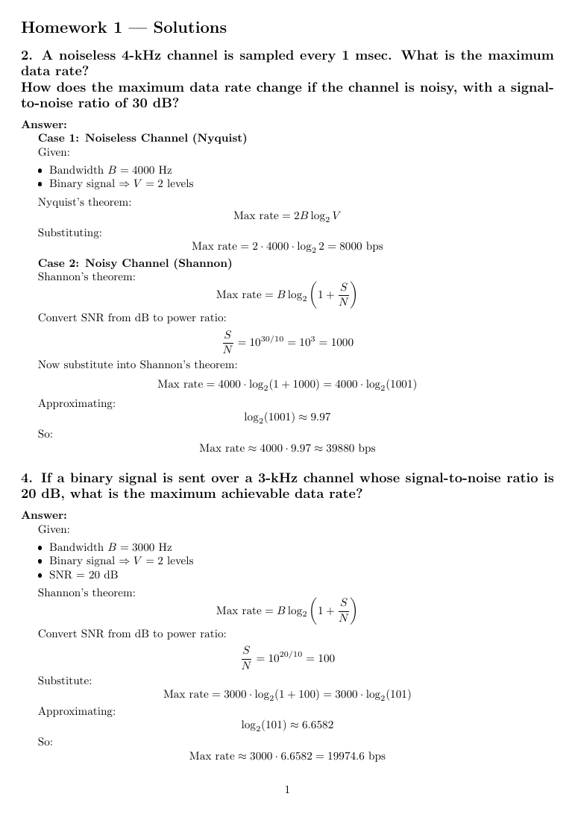

CMPS 3620 · Homework 2
Physical layer homework
Worked answers to ten physical-layer problems from the textbook: maximum data rates from the Nyquist and Shannon limits, satellite transit times, 4B/5B encoding, QAM-64, network topologies and decoding CDMA chip sequences.
What I did
- Worked each problem step by step in LaTeX, showing the formula, the values and the result.
- Converted signal-to-noise ratios from decibels before applying Shannon's limit.
- Decoded the CDMA problem by splitting the received chips into 4-chip blocks and taking the dot product of each block with every station's sequence; the sign of the result gives the bit.
What I used
- LaTeX
- Nyquist limit
- Shannon limit
- CDMA
- Encoding
Concepts:
- Nyquist and Shannon limits
- Signal encoding
How to build and run
From the folder with the code:
pdflatex answer.texRequires: Linux with gcc. Write-ups in .tex/.ltx build with any LaTeX distribution (pdflatex).
Snapshots
Real runs of the program, captured in a terminal or on a virtual screen.
Page 1 of answer.tex, built with pdflatex.


Files
| File | What it is |
|---|---|
answer.tex | The worked answers (LaTeX). |
| File | What it is |
|---|---|
questions.txt | The assigned problems. |
Fig_2-28.png | The textbook figure with the CDMA chip sequences used in problems 44 and 46. |